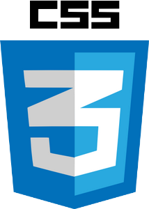
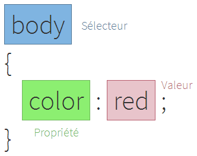

CSS est l'acronyme de « Cascading Style Sheets » qu'on pourrait traduire par "feuilles de style en cascade".
Pour faire rapide CSS permet de gérer tout le style, le visuel d'une page web. Bordure, couleur, placement d'un élément, opacité,
police d'écriture, marges, style de police, etc.
Il agit sur des éléments
HTML.
On peut soit intégrer le CSS directement sur l'élément HTML soit dans un fichier à part. Il est bien sur conseillé de séparer les informations,
un site web bien construit doit avoir une page de structure de code ( HTML ) et un fichier CSS à part.
L'attribut style
Exemple de CSS dans un élément HTML
<div style="color:white;background-color:green;">Bonjour</div>
Résultat:
La balise style
Je peux séparer le CSS comme ceci:
| <style> |
|---|
| #element |
|---|
| { |
|---|
| color:white; |
|---|
| background-color:green; |
|---|
| } |
|---|
| </style> |
|---|
<div id="element">Bonjour</div>
Résultat:
Le fichier css
Je peux appeler mon css d'une ressource extérieure. Dans mon exemple je veux appeler le CSS qui se trouve dans le dossier
folder et se nomme file.css
<link rel="stylesheet" href="/folder/file.css">
A retenir
Le CSS peut être injecté directement dans la balise à travers l'attribut style
Le CSS peut être séparé du code HTML en l'encadrant de balises style
Le CSS peut être appelé depuis une autre page
Pourquoi utiliser CSS ?
Aujourd'hui CSS est un incontournable du web. Bien qu'il soit possible de changer le visuel de beaucoup d'éléments HTML en HTML,
l'utilisation de CSS rend la création de page web beaucoup plus simple, plus rapide et permet surtout une meilleure évolutivité.
Si vous avez un site web de 1000 pages statiques et différentes et que votre titre pricinpal encadré par la balise <h1>
est de couleur rouge mais
que par la suite vous voulez du bleu, en CSS il suffira de changer une ligne de code, en HTML vous devriez le changer 1000 fois.
Syntaxe CSS

UNE QUESTION SUR L'ARTICLE?